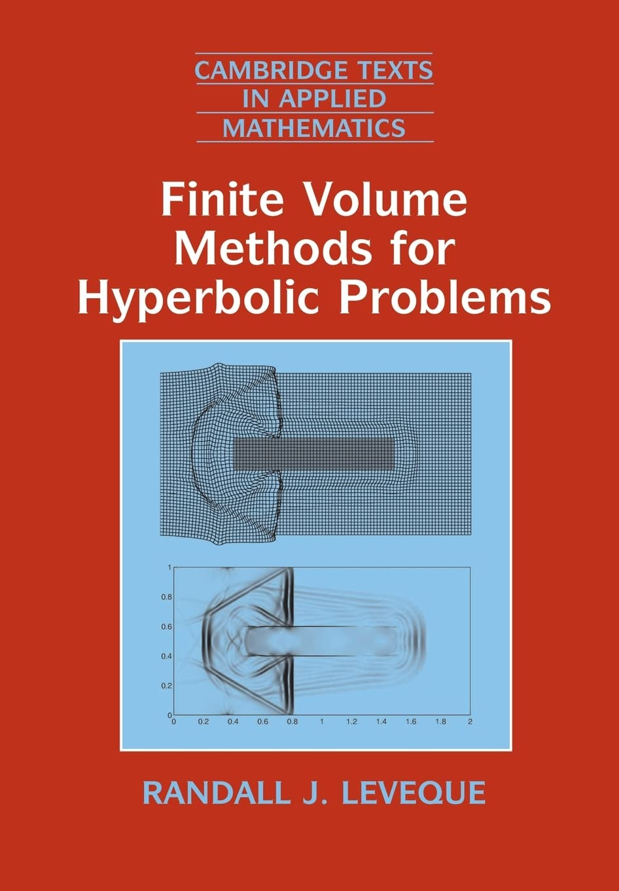
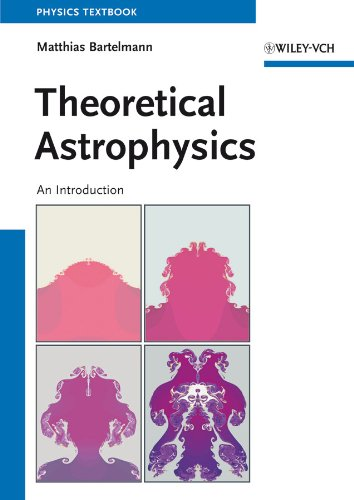

## 198709 VU HPC implementations A: Parallelisation / 706845 PR Methods in Computational Physics B: Parallelisation - Introduction & Administrative Stuff Philipp Gschwandtner, Ralf Kissmann --- ## Organizational stuff <div class="container"> <div class="col"> - Time and Space - See [lfu:online](https://lfuonline.uibk.ac.at/public/lfuonline_lv.details?sem_id_in=24S&lvnr_id_in=198709&sprache_in=en) for exact dates - Generally Thursdays 12:00-14:45 - Prerequisites - Interest in scientific programming and physics - Programming in C or C++ </div> <div class="col"> - Content - General concepts of hydrodynamics and finite volume schemes - General concepts of optimization - General concepts of programming </div> </div> --- ## Course Structure - Interleaved units of lectures and pratical exercises - Interleaved units of physics and computer science - No exact plan yet - Course material is brand new and being generated as we speak - We'll see how it goes and adjust dynamically according to progress and experience... --- ## Discord Server - Discord server for any discussions outside the VU - https://discord.gg/MyhjHDWezC --- ## Grading: Proseminar - Regular assignments, published on OLAT - Link to GitHub - not necessarily every week - Teamwork is permitted and encouraged - 3 people max. per team - <u>Every</u> team member must be able to present and discuss solution - Solutions must be handed in until Thursday 08:00! - Solutions of assignments on the LCC3 cluster <u>must work</u> on LCC3 - Copying solutions (e.g. off the Internet) is acceptable <u>if cited properly and understood</u> - Grade is 50% solutions, 50% presentations/discussion - <u>both must be above 50%!</u> --- ## Literature <div class="container"> <div class="col"> - LeVeque, Randall J.: <i>Finite volume methods for hyperbolic problems</i>, 2007 - Bartelmann, Matthias: <i>Theoretical astrophysics: an introduction</i>, 2013 </div> <div class="col">   </div> --- ## Hints (not only) for this course <div class="container"> <div class="col"> - choose a suitable source code editor / IDE and choose it wisely! - get acquainted with your toolchain debuggers, version control (git), etc. - use common sense and sanity checks! </div> <div class="col"> <img src="img/sandbox.png" height="100%"> </div>